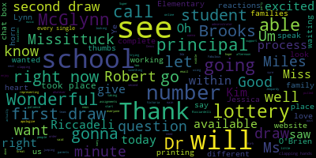

[Unidentified]: Good evening, everybody. Good afternoon, ladies and gentlemen, and thank you for being here for a lottery. We're just doing some final preparations. and setting up the Zoom, Dr. Edouard-Vincent will be with you shortly for the lottery. Thank you very much for joining us today, and we'll be with you shortly.
[Edouard-Vincent]: Good afternoon, Mustang family. I am so excited to be here. We have right now 77, probably more than 77, because I see some of you are with your parents right now on the call. I'm really excited. We are getting ready to do our middle school lottery. I am Dr. Edouard-Vincent, your very proud superintendent. And with me today, I have our data manager, Ms. Kim Miles. who is going to be working magic in the background on the table right behind me. And next to me is Dr. Bernadette Riccadeli, who is our director of professional learning and student assessment. And Dr. Riccadeli is here as well. And as we go through today's process to actually select the schools and do the actual lottery, if there are questions, We will be putting it in the chat box. If you have questions or you need clarification or support, either Dr. Ricciardelli or Ms. Kim Miles, you will be able to email them with questions. So we will make sure that we get that into the chat box. So I want to thank you all for your patience. We have a couple of different technology. We're using the Zoom room and we're using our individual computers. So we're muted at different points. So I want to end the suffering and hopefully have lots of rejoicing that's going to take place. We're going to start this lottery process. We're going to do it in ABC order, alphabetical order with our schools. And as soon again, as the schools are picked, we will be working very diligently to get those numbers online. So that you will be so give us about an hour, but we may be able to get it online, you know, maybe within 30 to 40 minutes. So that depends on how quickly we are able to get everything done. I am also just gonna pass the baton to Dr. Ricciardelli and give her a minute just to address you as well. And then we will start The lottery process. Thank you again for your patience and good afternoon to all of you.
[Ricciardelli]: Hello families. It's so great to see you. I see a couple of familiar faces. for those of you that have your screen on. So as Superintendent Edouard-Vincent just said, within an hour, maybe a little over an hour, you will know for sure. So when we run the stat track program, which is a random number generator, Kim Miles, who you were introduced moments ago, is gonna be running that. So she's in the room, but you're not gonna see the numbers as they're pulled up. She's gonna pull them up, they're gonna be printed out, and then they are going to be put onto our website. All right, so at that point, you'll see which school you're assigned to, whether it be the McGlynn or the Andrews. We are gonna pull them in alphabetical order, so the Brooks will be first, followed by the McGlynn, then the Mississippi, and then the Roberts. And then once you do find out which school you're assigned to, you will be invited to one of the open one of the two open houses. So the Andrews open house will be on May 4th and the McGlynn open house will be on May 2nd. You'll also be getting an official letter with the school assignment that is slated to go out on April 24th. We're hopeful that we're going to be able to get it out to you before the end of this week. So we scheduled it for April 24th, but we think we can get it out to you earlier. All right, so I think without any further delay in this process, I know that you wanna find out as soon as possible. I think at this point, we are gonna turn it over to Kim and she is gonna start the random number generator for the Brooks Elementary School. And it's just gonna take maybe a minute or two, maybe three for each school. So sit tight.
[Edouard-Vincent]: Also in true lottery fashion, I've had the pleasure of always playing our Jeopardy music because we're kind of waiting. So please enjoy the music from Jeopardy.
[Ricciardelli]: Okay, Miss Miles. Okay, so Lottery 1 at the Brooks.
[Unidentified]: It's like, you know, okay the first draw
[Edouard-Vincent]: I apologize. I apologize for the echo. The first draw just took place for the Brooks, and the second draw will be taking place as well. Thank you.
[Unidentified]: I apologize for that.
[Edouard-Vincent]: Second lottery just pulled lottery to Brooks. So it's complete. Brooke School is complete. So for each school, for each school, there will be two draws. The first draw and the second draw is for some of our students that are that have some of our students with disabilities that there is a draw to evenly balance the students between every single school. So, for every single school, there will be two draws. And right now that we've completed the Brooks, we're going to move on to the Glen, but both draws just took place. Thank you. McGlynn McGlynn first draw is complete. It's printing right now. And we are going to wait for McGlynn second draw to come out next.
[Unidentified]: Okay. Okay. Second draw for the McGlynn just took place. Third draw is going to be
[Edouard-Vincent]: Missittuck Elementary School.
[Unidentified]: Thank you. It's getting ready to print.
[Edouard-Vincent]: First draw for the Missittuck is printing. And second draw for the Missittuck will begin shortly.
[Unidentified]: second poll is complete.
[Edouard-Vincent]: It is printing right now. Mr. Tuck. Second poll is Robert's school first draw is being pulled. First draw for the Roberts took place. Second draw for the Roberts is taking place right now. said you want to let people know.
[Unidentified]: I promise we will get things up there within 30 minutes.
[Edouard-Vincent]: Um, people are waiting. Good. Good news. We know that families are waiting. I hope. Can I see a thumbs up if families can hear me? Excellent. Excellent. Thank you. Um, good news. Miss Miles said she she will be able to get the all the numbers up onto the website within 30 minutes. So let's hope for that. I actually see that we have some of our principals on the call as well. Oh, Jessica Sa, I love you too. I love all of you. Thank you. I just wanna see, now we have 86 families on the call. So all of our draws took place. I'm gonna look at our reactions. If you are from the Brooks School, let us see how many clapping hands pop up on the screens. I just would love to see that. If you're from the Brooks School, all right, I see clapping hands. I see clapping hands. I see Ida and Jessica and Lily and Grace. I see Rosa. I know some of us don't have our cameras on. Poma and Sophia. Fabulous. I'm trying to swing to jump through. I wanted to just give you a shout out for being on the call. This will be available to you. If you are from the McGlynn school, can I see a thumbs up? Um, under reactions, McGlynn school. All right. I saw, um, Oh, Lally. I got clapping down there too. Great. Jessica, Victoria. Um, Let's see who else. Wonderful for the McGlynn. If you are from the Missittuck, can I see some hearts? Can I see any hearts go up? If you're representing the Missittuck Elementary School, Kim D, Tom Ye, I see you. I see you. I'm flipping through, so I'm not, I just wanna recognize you. If you are from the Roberts School, can I see the hooray little horn, like the party horn? Let's look. I see you, Lynn. And I see AK. I see, I just saw George. All right, let's have everybody who's on the call, whatever school you represent, And what I asked was, clapping for the Brooks, thumbs up for the McGlynn, heart for the Missituk, and the little party horn for the Roberts. Can I see everyone respond all at once? Fabulous. Erlandy, I see you. I see you, Ben, and Ida, and Michelle, and Miss Deimos, and David, and Lynn. Wonderful. I see all Mary and Victoria and Jenna and Courtney and Wally. Wonderful. I see Kirk. Oh, Kirk Davis. I miss Hayes. I see Oh, warrior. Wonderful. So I just wanted to give any of the principles a quick opportunity if they if they just want to say hello and Kim I saw you. Thank you for your wonderful reactions. So we don't announce the numbers because the numbers are personal to every single student and family. So we pull all the numbers, the numbers will be posted, and no one's name is affiliated with the number. But you have your personalized number, so that will happen. Ms. Demos, I'm not sure if you wanted to speak. I'm just here for the excitement. All of them. Yes. Equally excited. And of course, principals will be receiving the list as well to be able to confirm once it's done. And I was looking to see if I saw a different administrator, but miss demos, I think you are on the call today. Thank you for representing all of our elementary principals. And, ah, Principal O'Brien, there you are. I didn't see you. Would you like to speak, Principal O'Brien?
[O'Brien]: Certainly, Dr. Edwards. Congratulations to all our fifth grade kiddos who are about to find out where they will be attending middle school next year. Very happy for you all.
[Edouard-Vincent]: Super, super happy. Thank you. Principal O'Brien, there was a wonderful question asking, where is it gonna appear? So our website team, we're gonna be working with them. They're gonna try to have it prominent, like a button or something like that. So when you go to the main page, there will be something that is gonna say middle school lottery, and then you'll be able to go into that and we will have that information available front and center. So you will not go on a wild goose chase. Go to Medford Public Schools, our main website, and you'll be able to do it that way. And I'm just trying to look at... Okay, I want to say thank you. You'll see the number. Some of the questions I'm looking at. Yes. Each student was given a number and Dr. Riccadeli, I'm going to ask if you are able to just put your email in the chat box for both you and for Ms. Miles. And again, if for whatever reason you need to speak with an administrator, both Ms. Miles and Dr. Riccadeli, they are going to be available to help support you with this process. But thank you for jumping on the lottery. I could see Lynn is so excited. I know this is like, it's exciting. I can't wait till all of you get your wonderful assignments. And thank you to so many of you for jumping on the call today. And your numbers will be up within 30 minutes, within 30 minutes. So it's 328 by four o'clock. We will have the numbers up and available for everyone to find their assignments. Thank you, parents. Thank you, family, caregivers. Thank you, principals. Thank you, team. Have a great rest of the day. Enjoy the beautiful weather outside.
|
total time: 13.54 minutes total words: 1489  |
|||
{kind=link}